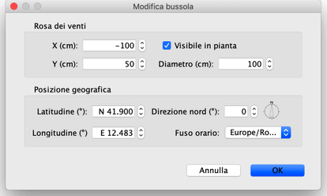

| Quando il puntatore del mouse si trova su uno di questi indicatori, cambia
per indicare che puoi trascinare e rilasciare quel punto.
Anche la rosa dei venti e la posizione geografica della tua casa possono
essere modificate grazie al loro riquadro, visualizzate con un doppio clic sul
rosa dei venti nella piantina della casa o scegliendo Piano > Modifica bussola...
fuori dal menù.

Nel riquadro della bussola, puoi modificare la posizione, il diametro,
la direzione nord della rosa dei venti e impostare se dovrebbe essere
visualizzata nel piano o meno. Puoi anche scegliere la latitudine e
la longitudine della posizione geografica della casa e il fuso orario
della sua regione.
|